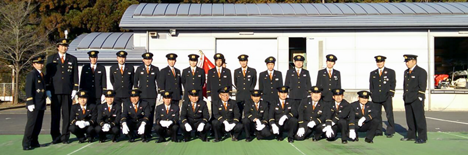
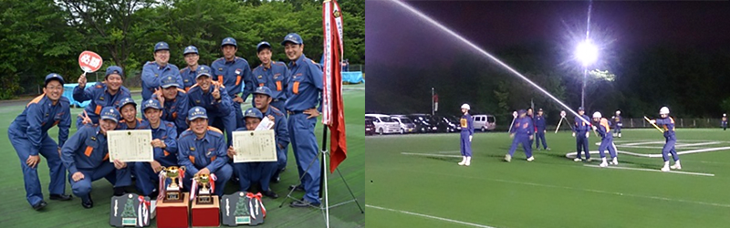
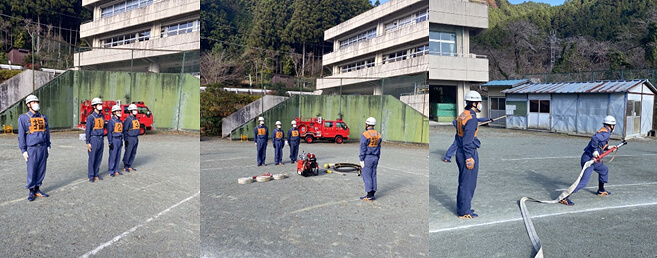
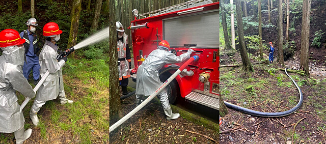
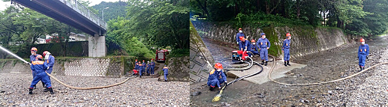
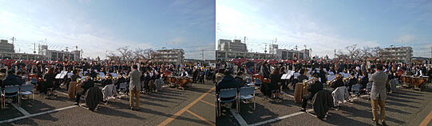
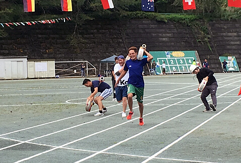
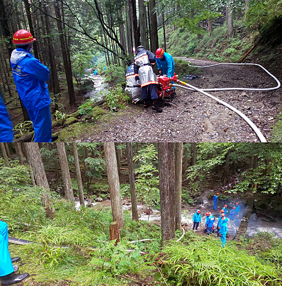
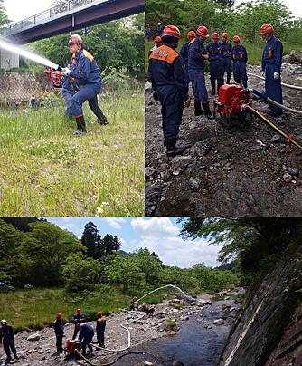

第11分団


令和2年度トピックス
◆11月28日(土) 特別点検（中止）新型コロナウイルス感染拡大防止のため、今年の特別点検が中止となってしまったため、名栗中学校の校庭をお借りして消防後援会の皆様へ操法を披露したほか、器具の点検や清掃、地区内の巡視などを行いました。これから火災が多い時期になりますので、感染予防に取り組みながら予防消防にも努めてまいります。

◆9月13日（日）中継送水訓練
11分団地内で中継送水訓練を行いました。名栗地区は山林が多いため、山林火災に備えて日頃から水利を確認し、訓練を重ねておく必要があります。短時間の訓練ではありましたが、集中して取り組むことができました。

◆2020年6月21日（日）分団訓練
今年度は消防団の活動が縮小・中止となっていましたが、久しぶりに団員が集まって地区内で水出し訓練を行いました。新型コロナウイルスの感染拡大防止に配慮して短時間の訓練でしたが、各団員が集中して取り組むことができ、大変有意義な訓練になりました。

令和元年度トピックス
◆2020年1月11日(土) 出初式飯能市役所にて、出初式をさせて頂きました。当日は、我らが11分団2部の清水団員の指揮で飯能第一中学校吹奏楽部の皆さんの素晴らしい演奏で入場させて頂きました。

◆2019年9月14日(土) 名栗地区大運動会
小学校・中学校・地区住民合同運動会に、参加し気持ちいい汗を流させて頂きました。

◆2019年7月7日(日) 中継送水訓練
名栗地内にて2分団、4分団、11分団、名栗分署合同による中継送水訓練が行われました。

◆2019年5月19日(日) 水出し訓練
全分団による訓練が飯能日高消防署にて行われました。分団訓練終了後、移動して水出し訓練も行いました。
